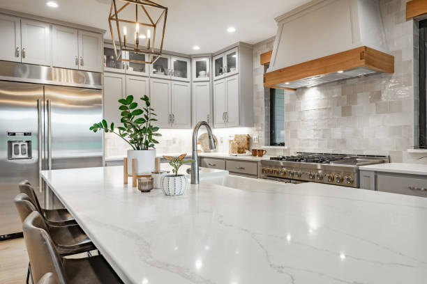
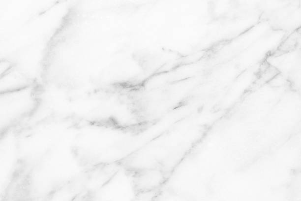

USA - Nationwide
info@ohmykitchen.pro
USA - Nationwide
info@ohmykitchen.pro

Improve workplace aesthetics with our office countertop installation . Stylish, durable surfaces enhance productivity and make a lasting impression!
Improve your workspace with our stylish office countertops. Durable and professional designs ensure a productive environment in Usa - Nationwide.
Residential & commercial Countertops
Quality services at affordable prices
Immediate 24/ 7 emergency services


When it comes to durability and timeless beauty, granite countertops stand unmatched. Granite is a natural stone that not only enhances the aesthetic appeal of your kitchen or bathroom but also ensures longevity and resilience against wear and tear. In Usa - Nationwide, our granite countertop installation service provides a seamless blend of functionality and style, making it a top choice for homeowners looking to elevate their spaces.
Choosing our services means partnering with experts who have extensive experience in granite countertop installation. Our team understands the nuances of working with natural stone, ensuring precision in every cut and placement. We source high-quality granite slabs from trusted suppliers to guarantee that you receive only the best material for your home. Each installation is customized to fit your unique kitchen or bathroom layout, reflecting your personal style and preferences.
Moreover, our commitment to customer satisfaction ensures that we guide you through the entire process, from selecting the right granite to the final installation. With us, you not only get a beautiful granite countertop but also a reliable and stress-free experience.

Embrace modern sophistication with our quartz countertop installation services . Known for their engineered strength and versatility, quartz countertops come in a vast range of colors and finishes, offering homeowners endless design possibilities. Unlike natural stones, quartz is non-porous, making it resistant to stains, scratches, and bacteria, thus ideal for busy kitchens and bathrooms.
By choosing our quartz countertop installation, you benefit from our skilled craftsmanship and attention to detail. Our team specializes in custom installations, ensuring your countertops fit perfectly within your space. We take pride in selecting the finest quartz materials, sourced from reputable manufacturers, guaranteeing exceptional quality and durability.
We know that every home is unique. That’s why we work closely with you to create a customized experience, tailored to your vision and needs. Our customer service is unparalleled – we’re here to answer your questions and provide guidance throughout the installation process. Experience luxury and functionality with our quartz countertops, designed to enhance your home’s aesthetics and increase its value.

Marble countertops evoke sophistication and luxury. If you are contemplating a marble countertop installation in Usa - Nationwide, our team is here to guide you through the process. Marble offers unparalleled beauty with its unique veining and color variations. Perfect for kitchens and bathrooms alike, marble adds a touch of class and elegance that few materials can match.
Choosing us means choosing expertise and quality. We specialize in the intricacies of marble installation, ensuring every slab is aligned perfectly and finished to your specifications. Our extensive experience means you can rely on us to avoid common pitfalls associated with marble as a material, such as seaming and finishing. We are dedicated to delivering exceptional results that will enhance the beauty of your space for years to come. Discover the timeless appeal of marble countertops with our professional installation services.

If you’re looking to add warmth and functionality to your kitchen, our butcher block countertop installation service is the perfect choice. Butcher block countertops offer a rustic charm, blending form and function seamlessly. Made from layers of wood, these countertops are not only beautiful but also practical for food preparation and cooking.
Our team specializes in butcher block installations, guaranteeing that your countertops are crafted with the finest woods available, such as maple, walnut, or cherry. We understand the importance of selecting the right wood grains and finishes, which is why we involve you in every step of the process.
Beyond aesthetics, our butcher block countertops are designed for durability and ease of maintenance. We guide you on how to care for your wooden surfaces, ensuring they remain stunning for years to come. When you choose us, you’re not just choosing a countertop; you’re making an investment in quality and craftsmanship that will enhance your kitchen for years to come.

Laminate countertops are an excellent choice for homeowners and businesses looking for stylish yet budget-friendly options. Our laminate countertop installation service offers an extensive selection of designs and finishes, making it easy to find the perfect match for your needs. Laminate is not only affordable, but it also mimics the look of more expensive materials like granite or marble, giving you stylish options without breaking the bank.
When you choose us for your laminate countertop installation, you can expect professional service and expert guidance throughout the process. Our team understands the importance of quality installation, ensuring that your new countertops are not only beautiful but also durable. We carefully manage every step, from material selection to final installation, to deliver results that exceed your expectations. Choose our laminate countertop services for a perfect balance of style, functionality, and cost-effectiveness.

Discover the seamless beauty of solid surface countertops with our expert installation services . Solid surface materials like Corian and LG Hi-Macs are designed to provide a modern, cohesive look in any kitchen or bathroom. Their non-porous nature makes them easy to clean and maintain, while also offering endless customization options.
Our team specializes in solid surface countertop installation, guaranteeing a perfect fit and impeccable craftsmanship. The flexibility of solid surface materials means we can create custom shapes and sizes to suit your needs, including integrated sinks and backsplashes that enhance the overall design.
We pride ourselves on our customer-centered approach, guiding you through the selection process to find the ideal style and color that complements your home. Not only do our solid surface countertops offer exceptional design possibilities, but they’re also durable and built to last. With proper care, they’ll maintain their beauty for years, making them a smart investment for your home.

For homeowners who desire an industrial chic flair, concrete countertops are a fantastic option. They offer an array of finishes, colors, and textures that can be customized to fit any aesthetic. Our concrete countertop installation services allow you to harness the creative potential of concrete, transforming your kitchen or bath into a freestyle design.
Our team of experts specializes in crafting bespoke concrete solutions, ensuring that your countertops not only meet but exceed your expectations. We utilize high-grade materials and innovative techniques to deliver durable and visually appealing results that stand the test of time.
Why choose us for your concrete countertop installation? We are dedicated to client satisfaction through personalized service and quality workmanship. Our skilled artisans understand the nuances of concrete and work meticulously to create a finished product that enhances your space’s uniqueness.

For the eco-conscious homeowner, our recycled glass countertops offer a stunning blend of beauty and sustainability. These countertops are made from post-consumer glass that is crushed and mixed with resin to create a durable surface that dazzles with color and shine.
When you choose our recycled glass countertop installation you’re making a choice that is not only visually appealing but also environmentally friendly. Our team of experts ensures that your installation is executed flawlessly, providing you with a one-of-a-kind masterpiece that not only transforms your space but also contributes to a greener planet.
Our commitment to quality means that we carefully select the glass materials used in your countertops, ensuring vibrant colors and a sustainable product. With options ranging from countertops with bold patterns to more subdued designs, we can create a look that matches your home’s décor. Experience the beauty of sustainability with our recycled glass countertops, and take pride in your environmentally responsible choice.

Custom countertops allow you to create a truly one-of-a-kind feature in your kitchen or bathroom. Our custom countertop design and fabrication services in Usa - Nationwide are tailored to your specific needs, ensuring that your vision is realized down to the finest detail.
Why are we the best choice for custom countertops? We offer a collaborative design process, where our experienced designers and skilled fabricators work closely with you to bring your ideas to life. We utilize the latest technology and highest quality materials to ensure your countertops are not only beautiful but also durable. With us, you will have personalized support throughout the project, guaranteeing satisfaction with the final result. Create a space that reflects your unique style with our customized countertop solutions!

If your current countertops are showing signs of wear and tear or simply no longer match your style, our countertop replacement services are here to help. Upgrading your countertops can significantly enhance the look and functionality of your kitchen or bathroom, increasing your home's value in the process.
Our replacement process begins with a thorough assessment of your existing countertops. We work closely with you to choose the perfect new material, taking into consideration aesthetics, durability, and budget. From granite to laminate, we have a wide selection of high-quality materials available to suit every homeowner's style and preference.
Our experienced installers ensure a smooth removal of your old countertops and a seamless installation of your new ones. We pride ourselves on our attention to detail and commitment to customer satisfaction. Once your replacement is complete, we provide care and maintenance tips to help keep your new countertops looking beautiful for years to come. Trust us to transform your space with stunning new countertops that reflect your taste and enhance your home’s overall appeal.

An outdoor kitchen is an extension of your home, and having the right countertops can make all the difference. Our outdoor kitchen countertop installation services focus on providing durable, weather-resistant surfaces that maintain their beauty year-round.
Whether you prefer granite, concrete, or another material, we’ll help you design a functional outdoor workspace that is both attractive and practical. Our team understands the unique challenges of outdoor installations, ensuring that your countertops can withstand the elements while providing a stunning area for food preparation and entertaining.
Opting for our services means working with professionals who prioritize quality and durability. We take pride in our craftsmanship, using high-quality materials that guarantee longevity. Furthermore, we are committed to ensuring your outdoor kitchen is a welcoming space for family and friends, enhancing your outdoor living experience.

The kitchen island often serves as the hub of the home, making it essential to choose the right countertop that balances functionality and style. Our kitchen island countertop installation services offer a variety of materials and designs personalized to meet your needs.
Why choose our team for your kitchen island? We offer an extensive selection of high-quality surfaces, from granite and quartz to butcher block and more. Our experienced designers will work with you to create a custom island that complements your kitchen's decor while maximizing your space. Additionally, our expert installation will ensure that your kitchen island is both practical and beautiful. Trust us to deliver a functional centerpiece to your home with our kitchen island countertop solutions!

Transforming your bathroom can significantly enhance your home's comfort and appeal, and choosing the right countertops is essential to this process. Our bathroom countertop installation services cater to various styles and materials, from luxury options like marble to budget-friendly laminate, ensuring that you find the perfect solution for your space.
Understanding the unique requirements of bathroom environments, our team is dedicated to providing surfaces that are both beautiful and functional. We focus on selecting materials that can withstand moisture and daily use while enhancing the overall aesthetic of your bathroom.
Why choose us for your bathroom countertops? We prioritize quality, versatility, and client satisfaction. Our skilled installers are trained to handle complex bathroom layouts, ensuring every aspect of the installation meets your expectations. With our services, you can count on a hassle-free experience and a stunning finished product.

The edges of your countertops play a significant role in your kitchen or bathroom's overall look. Our countertop edge design and customization services in Usa - Nationwide allow you to add a personal touch to your surfaces, enhancing their unique beauty and character.
We offer a variety of edge profiles, from classic beveled and rounded edges to more contemporary options like waterfall and ogee styles. Our skilled craftsmen can work with a range of materials including granite, quartz, and solid surfaces, ensuring that your chosen edge design aligns perfectly with your overall décor.
Customizing your countertop edges not only enhances aesthetics but can also improve functionality, offering smoother surfaces that are less likely to chip or wear. Our team will assist you in selecting the perfect edge design that complements your style, opens up your space, and matches your countertop material.
When you choose our edge design services, you’ll enjoy both expert guidance and a stunning final product. Transform your countertops into true works of art, reflecting your style and improving your space's overall functionality.

Breathe new life into your old countertops with our professional countertop resurfacing services . This cost-effective solution can significantly enhance the appearance and durability of your surfaces without the need for complete replacement.
Why choose our resurfacing services? Our experienced team specializes in a variety of materials, allowing us to resurface your countertops to look as good as new. We utilize high-quality materials and advanced techniques to ensure a flawless finish, extending the lifespan of your surfaces. Our resurfacing service is quick, efficient, and designed to minimize disruption in your home while providing superb results. Trust us to revitalize your countertops with our exceptional resurfacing solutions!

Over time, countertops can develop minor damage, such as scratches, chips, or stains that detract from their appearance. Our countertop repair and restoration services address these issues, bringing your surfaces back to life and restoring their beauty and functionality.
Our skilled technicians are trained in a variety of repair techniques tailored to different materials, from solid surface to granite and quartz. We take a comprehensive approach to assessing and addressing any damage, ensuring that repairs are seamless and long-lasting.
Why trust us for your countertop repair needs? We understand the importance of maintaining your investment, and our commitment to quality means that we use the best materials and techniques for all repairs. Our focus on customer service ensures that you are kept informed throughout the process, resulting in a restored surface that meets your expectations.

Proper sealing and maintenance are critical in preserving the beauty and longevity of stone countertops. Our sealing and maintenance services are designed to help you protect your investment and keep your countertops looking pristine.
Why choose us for countertop sealing? We use high-quality sealants that enhance the natural beauty of your stone while providing a protective barrier against stains and damage. Our experienced technicians understand the best practices for maintaining various stone types, ensuring that your countertops remain functional and attractive. Moreover, we offer ongoing support and education on proper maintenance techniques, helping you avoid common pitfalls. Trust us to help you maintain your countertops for years of enjoyment!

Creating a stylish home bar starts with selecting the perfect countertop that reflects your personal style and enhances your entertaining space. Our countertops for home bars are tailored to meet both functionality and aesthetics, ensuring you have a durable and attractive surface for mixing drinks and hosting guests.
From sleek modern designs to rustic wood options, the right countertop can set the tone for your home bar. Our experienced team assists you in choosing the right material, style, and size, crafting a space that aligns with your vision while maximizing usability.
You should choose us for your home bar countertops because we specialize in custom solutions tailored to your needs. Our dedication to quality craftsmanship and exceptional service means that you’ll receive a product that not only looks great but also enhances your entertaining experience.

As sustainability becomes a priority, we are proud to offer eco-friendly countertop options . From recycled materials to sustainably sourced products, our selection varies widely to meet your green building needs without sacrificing quality or style. Eco-friendly countertops can bring beauty to your home while also reflecting your commitment to environmental responsibility.
What sets us apart? We are knowledgeable about the best eco-friendly materials available in the market, helping you choose products that align with your values. Our team will take the time to explain the benefits of each option, from recycled glass to reclaimed wood. We ensure expert installation that prioritizes preservation and longevity, so your sustainable choices stand the test of time. Go green with confidence by selecting our eco-friendly countertop options in Usa - Nationwide.

When only the best will do, look to our luxury countertop installation service in Usa - Nationwide. We specialize in high-end materials, including exquisite granite, luxurious marble, and stunning quartzite. Our commitment to quality and craftsmanship ensures that your luxury countertops will not only enhance the beauty of your home but will also serve as a long-lasting investment.
Choosing us guarantees your luxury countertop project receives the attention and expertise it deserves. We work closely with you to select materials that reflect your style and complement your space, ensuring every aspect of the installation is handled with precision. Our team of skilled artisans has extensive experience with high-end materials, providing flawless finishes that will leave you in awe. Elevate your home with our luxury countertop installations in Usa - Nationwide, where elegance meets expertise.

In the fast-paced environment of a commercial kitchen, having reliable and durable countertops is essential. Our commercial kitchen countertop installation service in Usa - Nationwide focuses on providing high-performance surfaces that can withstand the demands of daily use. From restaurants to cafés, we understand the unique requirements of commercial kitchens and offer solutions that fit those needs perfectly.
What makes us the preferred choice for commercial countertop installation? Our extensive experience in the industry allows us to recommend the best materials suited for commercial kitchens, including stainless steel, quartz, and more. We prioritize durability, safety, and compliance with food service standards, ensuring your countertops meet practical requirements while looking great. Trust us to deliver high-quality commercial kitchen countertops that enhance your business operations.

Elevate your retail space with our custom countertop installation services . Countertops in retail environments not only need to be functional but also need to attract customers and complement your brand's identity. Our team specializes in creating visually appealing and practical countertop solutions tailored to retail settings.
We offer a variety of materials that combine form with function, including laminate, solid surface, and concrete. Each material can be customized in terms of color, texture, and edge design, allowing you to create a unique atmosphere that resonates with your brand.
Our experienced installers ensure that each countertop fits perfectly within your space while adhering to the highest standards of quality and craftsmanship. By focusing on aesthetics and durability, we aim to enhance the overall shopping experience for your customers.
With our retail store countertop solutions, you’re making a valuable investment in your business's presentation and functionality. Trust us to help you create an inviting and stylish retail environment that draws in customers.

The hospitality industry demands elegance and durability, and our hotel and restaurant countertop solutions in Usa - Nationwide provide the perfect combination of both. We understand that the countertops in these environments need to make a lasting impression while also standing up to daily wear and tear.
Our team specializes in a range of high-quality materials tailored to suit restaurants, bars, and hotel lobbies. From sophisticated granite and marble to resilient solid surface options, we have the expertise to install countertops that align with your brand’s aesthetic and functional needs.
We work closely with architects and designers to create customized solutions that enhance the overall ambiance of your space. Our meticulous installation process ensures that your countertops are not only visually stunning but also meet the operational demands of a busy environment.
Invest in our hotel and restaurant countertop solutions for a sophisticated and functional space that leaves a lasting impression on your guests. Experience our commitment to quality and customer service firsthand.

In demanding environments like medical facilities and laboratories, hygiene and durability are key components to consider for countertops. Our specialized countertop services for medical and laboratory settings cater to those critical needs.
Why choose our services? We understand the stringent requirements of medical and lab environments, offering materials that are easy to clean, resistant to chemicals, and built to last. Our experienced team ensures proper installation, meeting all health and safety regulations. We work closely with facility managers to provide customized solutions tailored to their unique space. Trust us to deliver countertops that are safe, efficient, and suitable for even the most sensitive environments!
USA - Nationwide Countertops Pros
(877) 848-1711
info@ohmykitchen.pro
09.00 AM - 09.00 PM
09.00 AM - 12.00 PM